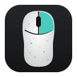

Pulsa el botón y elige el ratón (RK MG5 o RK M30) en la lista del navegador.
Solo hay que hacerlo una vez por equipo. Si instalas la app de escritorio con su paquete, la regla ya viene incluida.
Haz clic en un botón del dibujo para cambiar lo que hace.
Este ratón no permite leer qué hace cada botón: el panel muestra la distribución de fábrica o la última que pusiste desde aquí, y cada cambio reescribe los seis botones.
Niveles de sensibilidad que recorre el botón DPI y tasa de sondeo.
Por encima de 1000 Hz el ratón gasta bastante más batería.
Ajustes del sensor óptico y de los clics.
Batería y reposo del ratón.